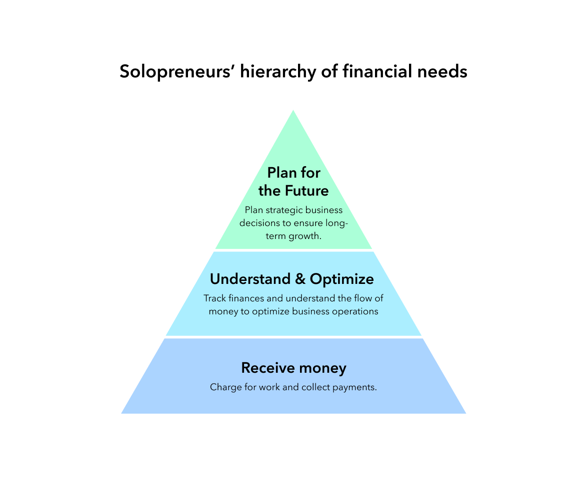
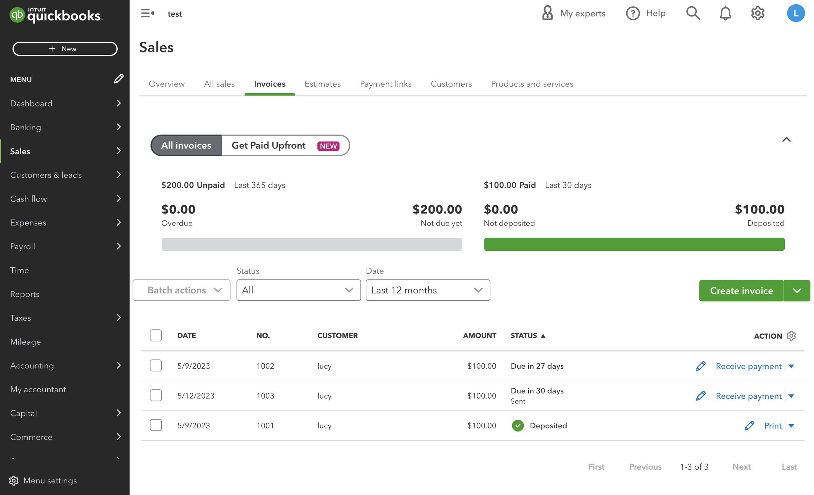
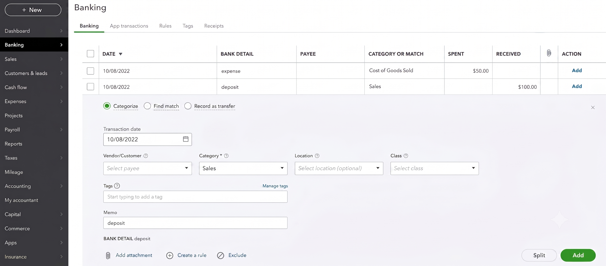
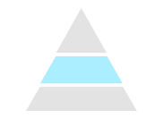
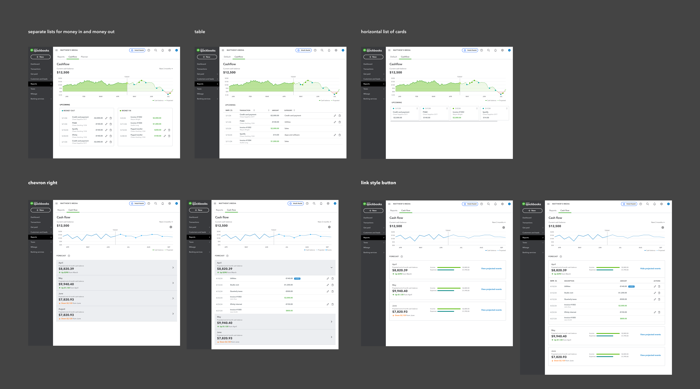
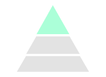
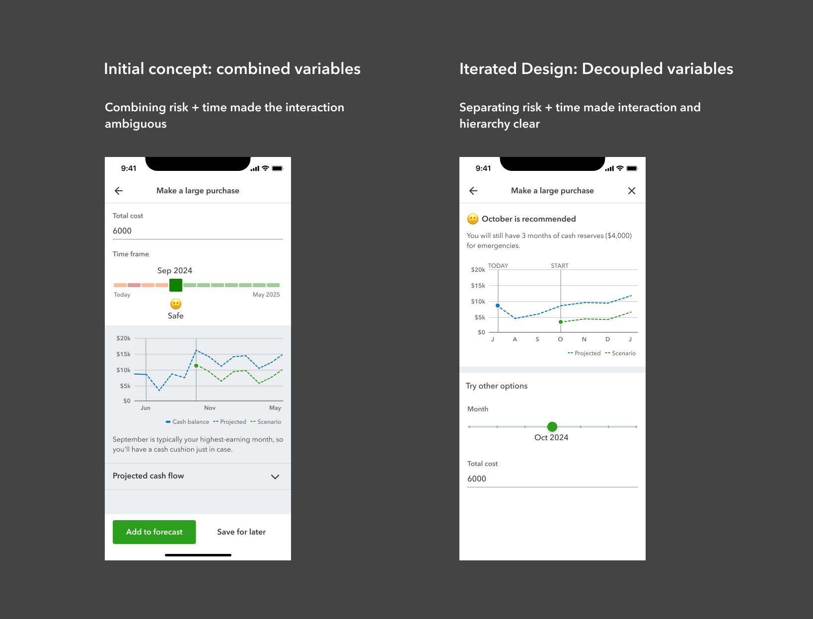

My Role
QuickBooks Solopreneur was built for people running businesses with no accounting background. The challenge was figuring out what to build for a segment Intuit hadn't served before, and which problems were worth solving first. The product now serves 110K+ subscribers across the US and UK, and invoice reconciliation completion reached 82%, nearly three times the rate on other QuickBooks products. My research also led leadership to invest in customer acquisition as its own product area.
Intuit identified solopreneurs as a massive, rapidly growing market and wanted to capture it. Solopreneurs are one-person businesses, many of whom left full-time jobs to pursue their work.
Existing QuickBooks products are built on double-entry accounting, which solopreneurs don't understand and don't know how to do. They have feature sets designed for more complex businesses and prices that feel hard to justify for a tool solopreneurs would only use a small part of. Intuit's bet was that a simpler, more affordable product built specifically for this segment could capture the market. My team was chartered to build it.
Understanding how solopreneurs run their businesses
We knew solopreneurs lacked accounting expertise, but we didn't know how they actually run their businesses or think about money. We conducted a two-month longitudinal study with 6 solopreneurs to understand their operations, behaviors, and mental models.
One insight stood out: finding customers was solopreneurs' top anxiety. I presented these findings to leadership and made the case that customer acquisition was a strategic gap in our ecosystem. That insight led leadership to form a dedicated team to help solopreneurs acquire customers.
For my area of ownership, I turned the research into a framework to guide what we built and in what order: the Solopreneur Hierarchy of Financial Needs.

Inspired by Maslow's hierarchy of needs, it organized the research findings into a clear structure and gave the team a reusable system for prioritization decisions. When new ideas came in, we could map them to a layer and talk about what needed to come first. I used it to align stakeholders on a clear order: make the foundational layer robust first, then shift strategy upward to support solopreneurs across their journey.
 Receive Money
Receive Money
The foundation's biggest pain point: Invoice reconciliation
Solopreneurs struggled to reconcile invoice payments, which often left their books inaccurate. When we looked at completion data across other QuickBooks products, only 30% completed the full flow.
The hierarchy showed we needed to start at the foundation. Solopreneurs could send invoices and get paid, but reconciling those payments once they come through was a different story. The workflow required accounting knowledge most solopreneurs simply don't have.
I redesigned the flow so the user only needs to select the bank and the transaction. The system handles the reconciliation in the background.





With the foundation more solid, new ideas came up, including payment links. But payment links fell in the bottom layer. I used the framework to make the case for shifting strategy upward: the higher layers were still largely unsupported, and solopreneurs were struggling with cash flow and planning for growth. The team aligned and committed the next quarter to those higher-level needs.

Understand & OptimizeCash flow clarity
Solopreneurs struggled to answer basic questions: how much money do I actually have, and how much can I spend? Existing QuickBooks tools required manual entry of future transactions to generate projections, which was too time consuming for solopreneurs who were already juggling a lot.
To solve this, I designed a cash flow page showing current, historical, and projected cash flow. It pulled from financial data already in QuickBooks, so solopreneurs didn't need to manually enter anything. We scoped three things for this release: see current and projected cash balance at a glance, understand patterns over time, and make corrections when projections were off.
I explored multiple layout approaches. Research showed solopreneurs think about finances in monthly cycles, so I structured the experience around months and used progressive disclosure: a clear overview first, with projected transactions one level deeper. The decision was about which layout matched how solopreneurs actually think, not which one looked better.

Final designs
I validated with 5 solopreneurs. The monthly mental model resonated, and users found the automated projections insightful.



Plan for GrowthPlanning with confidence
Solopreneurs hesitate on big business decisions because they lack financial expertise and have no one to run decisions by. Big decisions felt like taking a shot in the dark.
Our goal was to help solopreneurs make big decisions with more confidence, so I designed a scenario planning tool that shows the financial impact of a decision before they commit to it. For launch, we focused on the top three decisions solopreneurs were actively considering: making a large purchase, hiring a contractor, and paying themselves.
Navigating technical constraints
The original idea relied on GenAI to generate personalized timing recommendations. We built a proof of concept and it worked. But a company limitation prevented us from using GenAI in this release. Cutting the feature would have meant leaving solopreneurs without guidance on their biggest decisions, which was the whole point of building it. Instead we pivoted to a rules-based algorithm. I led working sessions with my PM and engineering lead to define risk thresholds, and we consulted an internal financial advisor to pressure-test our logic before shipping.
When more information wasn't the answer
My PM wanted to show users the full calculations behind each recommendation to build trust. My read was different: users cared about the insight, not the math.
Rather than debate it, I explored multiple versions of the experience with varying levels of detail. Looking at the options side by side made it clear that more information was adding cognitive load, not confidence. We landed on a simple explanation upfront with more detail one click away.
Along the way, I also fixed a slider issue that was causing confusion in testing. My early designs used a single control for both time and risk, but users didn't realize it was interactive because it was doing two things at once. Moving risk to the header and keeping the slider for time only cleared up the interaction and, as a bonus, removed the need for a complex custom component on the engineering side.

Final designs


QuickBooks Solopreneur launched in the US and UK.
Research surfaced customer acquisition as an unmet need, prompting leadership to form a dedicated team and add it to the roadmap.
The framework aligned cross-functional partners on priorities and guided roadmap decisions.
Designing for emotion
The research showed that solopreneurs weren't just anxious about money, they were uncertain about running a business in general. They wanted reassurance that they were doing okay. That finding stayed with me as I worked on the product. I designed the cash flow page and scenario planner to give solopreneurs confidence in their decisions and reassurance that they're on the track to success.
Future opportunities
If I had stayed on this project, here's where I would have focused next.
- Dig into usage data to find where the cash flow and scenario planner are working and where they fall short, then iterate
- Partner with the design systems team to contribute the slider component for broader reuse across QuickBooks
- Expand cash flow projections and scenario planning across other QuickBooks products so all small businesses can make more confident decisions
- Evolve planning from rules-based logic to AI-powered projections that support richer inputs like ROI assumptions and seasonality